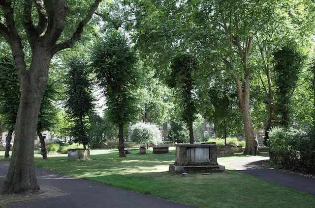

Welcome to PeaceFinder London. We have compiled an interactive map with a few
of our favourite chilled out spots for when the capital city gets a bit much. We've
included places mostly in and around University College London's main buildlings but
if you find a cozy corner or peaceful cafe you think the world needs to know about,
send us an email under the contact tab and we'll get back to you!
Thanks for
visiting PeaceFinder and we hope you find a new favourite chill out spot.